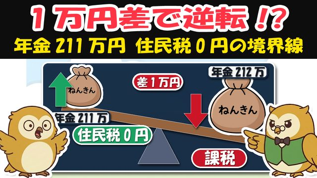
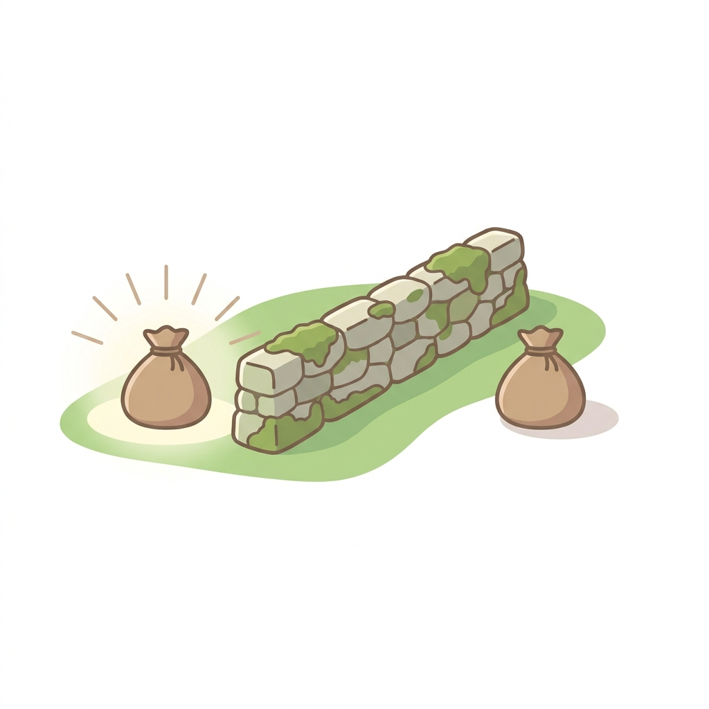
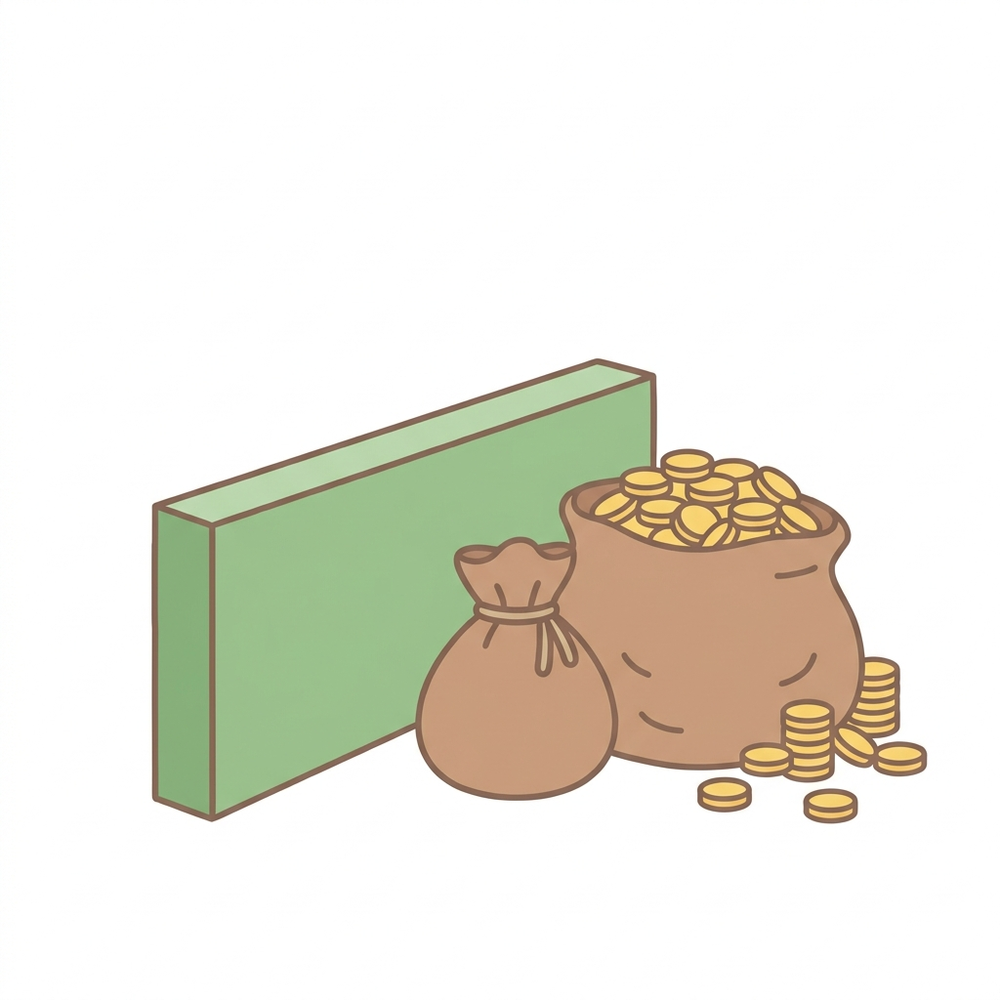

🎁 非課税かんたん判定シート（211万円の壁・1分判定フロー）


よく来たな。約束の物を渡す。
動画の「住民税0円の見えない線」を、紙1枚で自分の側が分かる形にまとめた。
1月の「源泉徴収票」か、6月の「年金振込通知書」を手元に置いて使うとよい。
✅ 1分でできる判定フロー
STEP1｜年金の年額を確かめる
1月に届く「源泉徴収票」の「支払金額」の欄＝あなたの年金の年額だ。
（6月の「年金振込通知書」でも分かる）
⚠️ 遺族年金・障害年金は数えない（税金の計算に入らない決まり。思ったより内側の人は多い）
STEP2｜年金のほかに「去年の収入」がなかったか思い出す
土地や建物を売った／株の利益・配当を確定申告した／保険の一時金を受け取った――
ひとつでもあれば、それも足して見られる。当てはまる人は下の「うっかり線越えチェック」へ。
STEP3｜下の早見表の線と比べる
線より下なら、あなたは内側（住民税0円）の可能性が高い。
ぎりぎりの人・扶養ありの人・STEP2に当てはまった人は、市区町村の窓口で確認すれば確実だ。
📏 線の早見表（2026年度・大都市のめやす）
| あなた | 線（年金の年額） |
|---|---|
| 65歳以上・ひとり暮らし | 155万円以下 |
| 65歳以上・夫婦（配偶者を扶養） | 211万円以下（相手も155万円以下が条件） |
| 60〜64歳・ひとり暮らし | 105万円以下（割引券が60万円のため） |
線の正体＝所得45万円以下なら住民税0円。年金には「見えない割引券」（65歳以上110万円・64歳まで60万円）があるので、155万−110万＝所得45万円、が単身の線になる。
⚠️ うっかり線越えチェック（当てはまったら役所で確認）

□ 去年、土地・建物を売った
→ 今年だけ線の外側になる。判定は毎年やり直しなので、収入が戻れば来年は内側へ戻る見込み（「一年だけの山」）。
□ 株の利益・配当を確定申告した
→ 税金が少し戻っても、所得に足されて線を越えることがある。先に税金が引かれる口座（源泉徴収あり）なら、申告しない道もある。損得は人それぞれ＝税務署か役所で確認してから。
□ 年金を繰下げで増やした（またはこれから増やす）
→ 増えた年金が線を越える場合がある。ただし年金の増えが勝つ場合も多い。給付金のために年金を減らすのは本末転倒だ。
□ 保険の満期金・解約返戻金を受け取った
→ 一時所得として判定に入る場合がある。
□ 【動画では話していないおまけ】会社からの退職金（一時金）
→ 原則、この判定には入らない（税金を先に精算する別ルートのため）。ただし受け取り方で変わる場合があるので、退職の年は窓口で確かめると安心だ。
□ 同居の家族に税金を払っている人がいる
→ あなた自身が0円でも、給付金の「非課税世帯」からは外れる（世帯全員が0円が条件）。
🎁 内側に入ると、こう変わる（動画のまとめ）
| なに | どうなる |
|---|---|
| 病院代の上限（ひと月） | 70歳以上 25,700円でストップ（2026年8月からの額） |
| 入院の食事代 | 1食550円 → 270円 |
| 介護保険料 | 段階が下がる（月2千円安い例） |
| 国保などの保険料 | 所得に応じ 最大7割引 |
| 町の給付金 | 対象になりやすい（数千円〜3万円の例） |
🗾 町タイプ別の線（動画では「大都市の線」だけ話した・おまけ）
| 町のタイプ | 単身の線 | 夫婦の線 |
|---|---|---|
| 大都市（1級地） | 155万円 | 211万円 |
| 中くらいの市（2級地） | 約151.5万円 | 約202万円 |
| 町村部など（3級地） | 約148万円 | 約193万円 |
自分の町がどのタイプかは、役所に聞くのがいちばん確実（「住民税の非課税基準を教えてください」でよい）。
⚠️ 本資料は教育目的の一般的な情報だ。住民税非課税の基準は、自治体（級地区分）・世帯構成・前年の所得で変わる（表の数字は2026年度・大都市中心のめやす）。給付金の有無・金額は自治体の判断で異なる。確定申告や年金の受け取り方の損得も人により違うため、実際の判定と手続きは市区町村の窓口・税務署で確かめてほしい。
線は、知っている者の味方だ。次の贈り物も、このLINEで届ける。— フク先生（老後資金の止まり木）